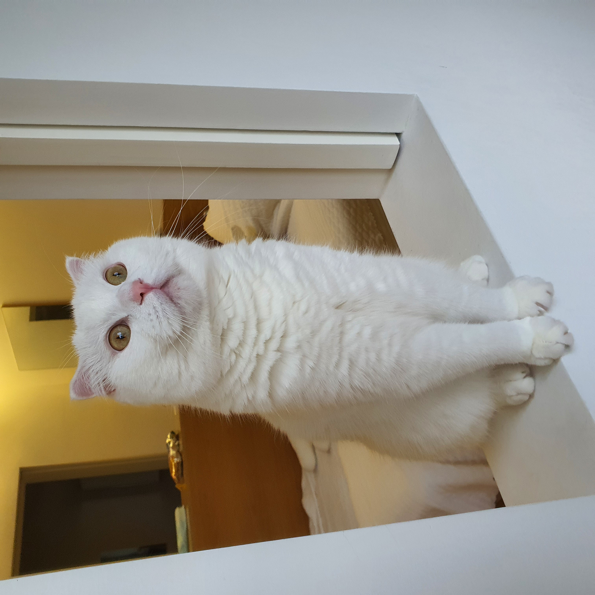
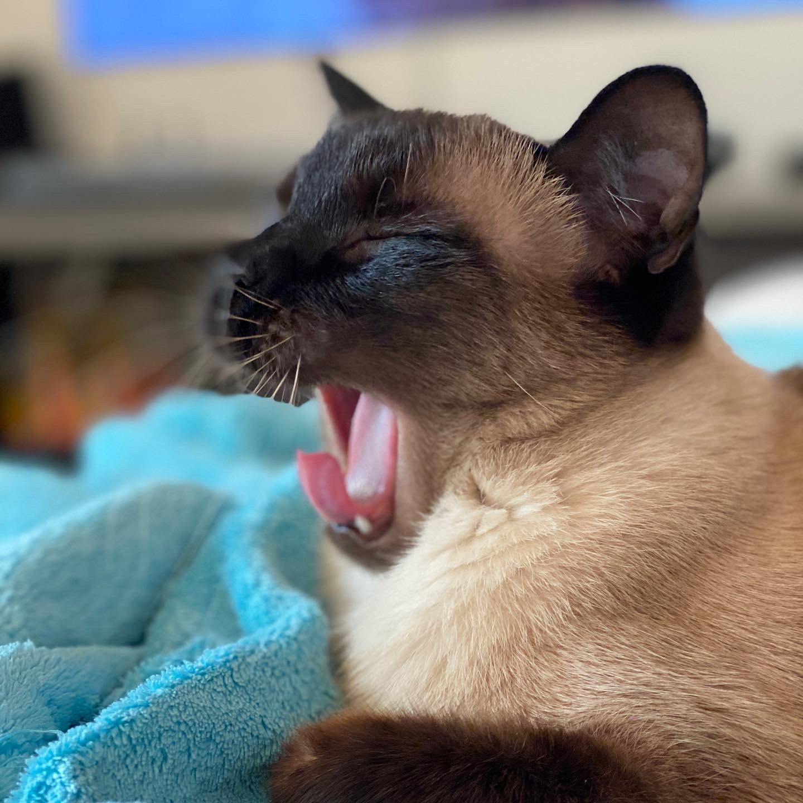
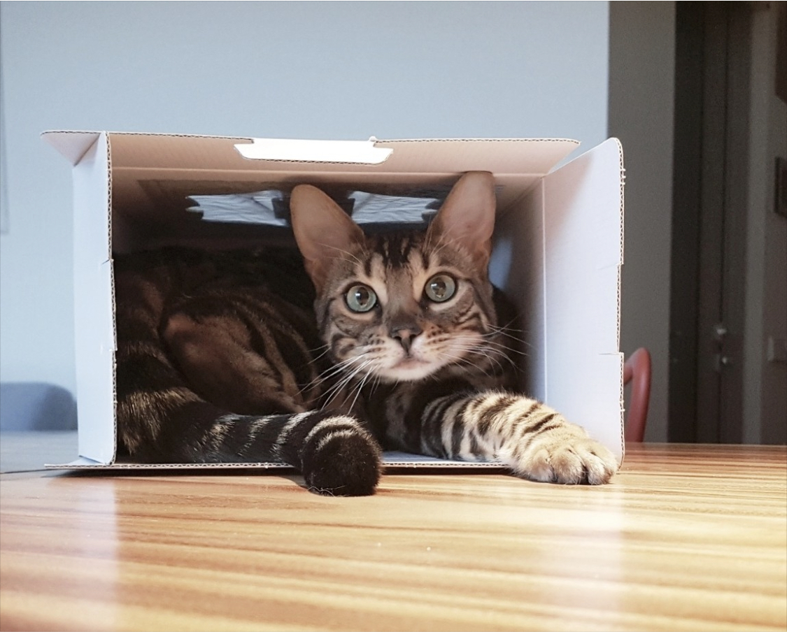
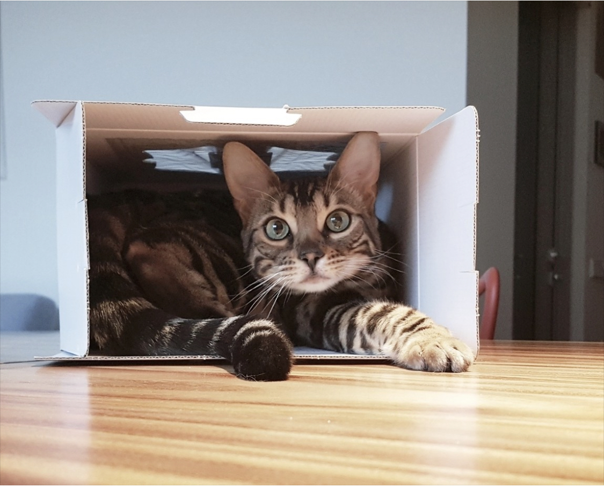

눈이후추호랑나비 사진 보고 가세요~
  

귀요미 냥이들을 소개합니다!
고양이들에 대해 더 알아봅시다!
|
|
고양이 탐구생활 | |
|---|---|---|
| 이름의 뜻 | 묘종 설명페이지 | |
| 눈이 | 눈이와 후추가 같이 와서 털 색에 따라 원래 소금 후추로 지으려다가 소금보다는 눈이 더 잘 어울린다고 생각하여 눈이가 된 눈이 | 스코티쉬 폴드 |
| 후추 | 소금과 후추중 후추를 담당하고 있는 후추 | 샴 |
| 호랑이 | 큰 오빠가 오랫동안 키우고 싶어했던 호랑이 대신 호랑이라는 이름을 갖게 된 고양이 호랑이 | 벵갈 |
| 나비 | 대중적인 고양이 이름이자 호랑이와 호랑나비로 이어지는 이름을 갖는 호랑이의 여동생 나비 | 벵갈 |